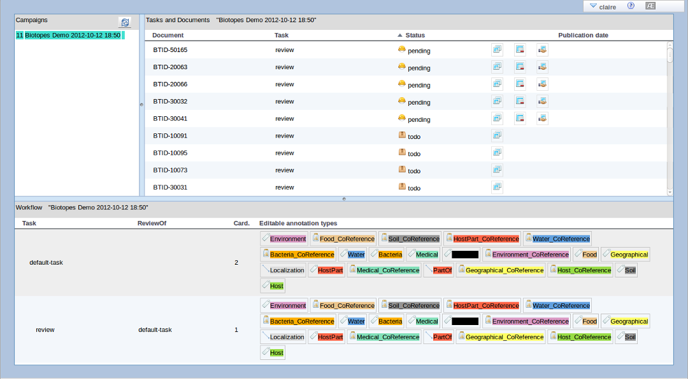
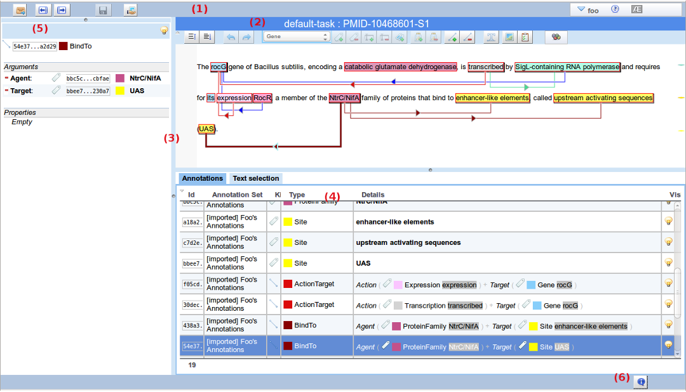
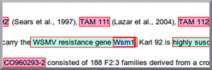
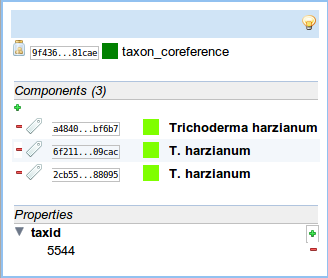
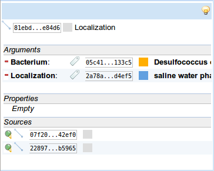
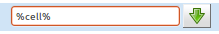
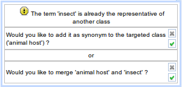
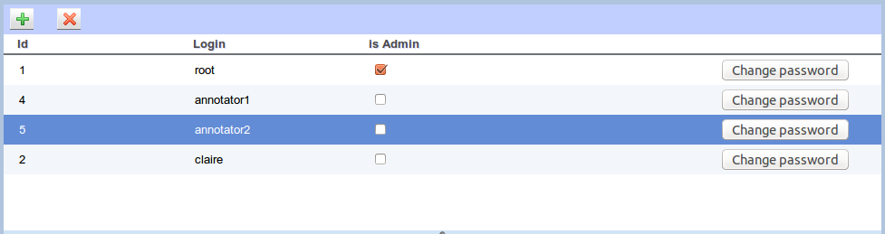
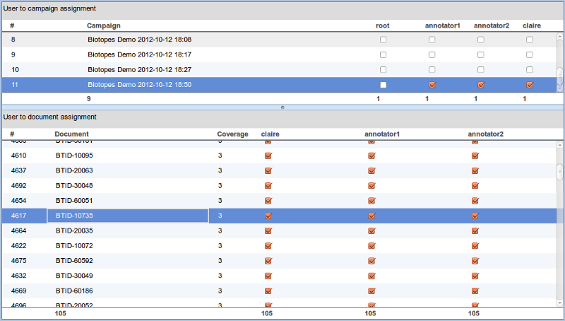

AlvisAE: Annotation Editor of the Alvis Suite
work in progress
- AlvisAE User Guide (v0.6)
AlvisAE User Guide (v0.6)¶
Introduction¶
AlvisAE is a tool designed to seamlessly perform the annotation of textual documents.
Because it is a Web Application, no installation is needed to start using AlvisAE : Indeed, AlvisAE runs on any platform providing a modern web browser (such as Firefox, Safari, Chrome).
Brief description¶
AlvisAE has been designed to facilitates the annotation of textual documents, with the goal of extracting knowledge. To do so, AlvisAE displays the text of the document, that can optionally includes some simple formatting;
Annotations are superimposed to the text, in a way that do not impair the readability.
Each Annotations belongs to a Type, and is displayed according to this Type (the list of Types and their associated colors are specified in the Annotation Schema).
 Quick start: creating a Text Annotation¶
Quick start: creating a Text Annotation¶
Creating an Text Annotation is fairly intuitive : simply select the words of interest with the mouse pointer, choose the desired annotation Type in the toolbar and click the “Create Text Annotation” button [ ].
Annotations come in 3 differents Kinds¶
- 1-
Text Annotations, also called primary annotation because they are bound to a part of the text
- 2-
Relation - which contains a fixed number of arguments, each argument being associated to a named role.
- 3-
Group - simple set of reference to other annotations (called components)
Creating secondary annotations¶
Creating secondary annotations is rather simple :
- A Relation between 2 Text Annotations is created by dragging the first annotation and dropping it onto the other one (drag the icon that appears at the top left corner of the annotation
);
- For more complex Relations (i.e. concerning more than 2 primary annotations, or some secondary annotation), you will need to select the arguments to be included in the relation from the Annotation Table, then clicking the "Create Relation" button [
].
- Creating Groups is also performed by selecting the components in the Annotation Table, then clicking the "Create Group" button [
].
Tour of AlvisAE¶
start using AlvisAE¶
you can experiment AlvisAE with the online demo at https://bibliome.jouy.inra.fr/alvisae/demo/AlvisAE/
Authentication¶
since each user can edit its own annotation, you will need to authenticate before doing any modification. If you are trying the online demo, login name and password are both :
foo
AlvisAE will remember your login name for next time!
Campaign and Task selection¶
Once authenticated, AlvisAE will display the list of the available Annotation projects which are called "Campaign".
Each campaign contains a set of documents that can be annotated according to the Annotation schema specific to the campaign.
A campaign is usually divided into smaller Tasks that may be carried out by different annotators, and that AlvisAE will help you to schedule.
The top left list shows campaigns available to the current user; On the right, another table displays, for the selected campaign, the list of the user's tasks, and actions that can be performed on them.
The bottom table contains the summary of the workflow of the selected campaign.

For the purpose of this brief introduction, just choose any pending or
todo Task and click the "Annotate" button [
] in the grid to start annotating the corresponding document.
Editing view¶
The selected document is displayed in the editing view :

The editing view can be divided in the following parts:- Global toolbar, providing commands to:
- browse documents [
/
],
- return to campaigns & documents list [
],
- save the edited annotations [
],
- end the annotation of the current document [
],
- menu to perform miscellaneous actions, including to signing-out, and links to online help and About dialog.
- browse documents [
- Editor panel, which display the document itself and commands to annotate it
- resizeable Panel-Boundaries, to organize the space within the browser window
- Annotation table, displaying annotation in a tabular format
- Property Sheet on the left side panel, used to display and edit Annotation properties
- Status bar, displaying system messages and network activity
Editor panel¶
Title Bar¶
It displays the name of the current task and the title of the document.
double-clicking on the title bar will maximize the document panel (double-click on it again to restore normal view)
when the title of the document is underlined, it contains an hyperlink to the source of the document (typically the PDF version of the document)
ToolBar¶
the toolbar contains all the commands used to edit annotations:increase text interline size,
decrease interline size,
undo last edit (shortcut [
Ctrl & Z]),redo last undo-ed edit (shortcut [
Ctrl & Y]),
- choose text annotation Type from the drop-down list (only the Types editable within the current Task are displayed),
create a new Text Annotation with the currently selected text portion (shortcut [
A]),remove the currently selected Text Annotation (shortcut [
Del]),
- enlarge the selected Text Annotation span by adding the currently selected text,
shrink the selected Text Annotation span by remove the currently selected text,
replicate the selected Text Annotation (search for other occurrences of its text within the document, and create new Annotation of the same type for any match)
remove the selected Group,
edit the selected Group (add/remove components),
remove the selected Relation,
edit the selected Relation (change type and/or arguments),
/
switch between Text selection and secondary annotation selection mode (shortcut [
V]),
display the campaign Annotation Schema,
validate the current document against the Annotation Schema,
Refresh all references to TyDI resources (see Termino-Ontology Extension)
select the displayed Annotation Sets
The toolbar can be collapsed by clicking on the small triangular icon on the top left side [
]
Document panel¶
This is the central panel of AlvisAE, which displays the text of the document, enriched with specific graphical elements to represent the different kind of Annotations.
When a document is loaded, Relations are hidden by default to preserve a good text readability (Text Annotation which are involved in a hidden Relation are indicated by a triangle glyph on its top right border).
when the mouse pointer fly over a Text Annotation, all Relations involving the hovered Text Annotation are temporarily revealed (The visibility status of each annotation can be individually set from the Annotation table or the Property Sheet)
Text Annotations¶
Graphical representation
Text Annotation are displayed as colored boxes, whose background color is set according to the Annotation Type.The border color has also some specific meaning:
- red : default color of unselected annotation,
- yellow : currently hovered, unselected annotation,
- cyan : color of selected annotation(s),
- dark green : currently hovered, selected annotation,
- lime green : currently hovered annotation during a drag and drop operation
The border is always displayed, even if an annotation is hidden because it includes another annotation. So, the thickness of the border is a good indication of the number of included annotations.

Pressing the
Shift key while moving the mouse pointer over included annotations will popup the exploded list of annotations present at the mouse position, which is useful to select the right annotation (this list is automatically opened when dropping during a drag and drop operation intended to create a Relation).
Edition
- Click and drag to select a fragment of text, then click the “Create Text Annotation” button [
AIt is possible to create discontinuous annotation by selecting several distinct fragments of text with the
Ctrlkey pressed (your web browser must support discontinuous text selection)
- margin : warning icons....
TODO : add details here
Relations¶
Graphical representation
Relations are figured by horizontal and vertical line segments linking each arguments to a polygonal kernel, whose background color is set according to the Annotation Type. In the case of binary Relations, the kernel is a an arrow-head pointing from the first argument to the second one (in their order of declaration in the Annotation schema). For Relations of higher arity, the kernel is a simple diamond shape.
Groups¶
Graphical representation
Groups are figured by diagonal line segments linking each component to a circled kernel, whose background color is set according to the Annotation Type.
Occurrence bar¶
This is a vertical bar (located on right side of the document panel) where each Text Annotation is figured by a little horizontal line marker :- the vertical position of the marker on the bar is proportional to the annotation location inside the document,
- the marker's color correspond to its Annotation Type.
double-clicking on a marker will scroll the document to view the corresponding text annotation.
The occurrence bar presents a global summary of all Text Annotations of the current document, in terms of localization, density, and is especially useful for areas of the document currently not scrolled into view.
Property Sheet¶
 
this view display details of the currently selected annotation, from top to bottom :
- a topbar, with a button to toggle the visibility of the annotation in the corresponding Document panel.
- a header, spreading on 1 or 2 lines:
- Kind, identifier, type indicator
- covered text for Text Annotation
- Kind, identifier, type indicator
- for Relations, a sub-panel displaying argument for each roles
- any argument can be changed by clicking on the corresponding Kind indicator. It will open a popup list allowing to choose a new argument for that role.
- any argument can be removed by clicking on the red minus sign located at the left of the argument row. Even if it is possible to save incomplete Relations, it may not validate against the schema.
- for Groups, a sub-panel displaying list of the components
- any component can be removed by clicking on the red minus sign located at the left of the component row. Even if it is possible to save empty Groups, it may not validate against the schema.
- new components can be added to the Group by clicking on green plus sign located above the component rows.
- a Property sub-panel displaying every property and its values.
- new property value can be added by clicking on the green plus sign
- any existing value can be removed by clicking on the red minus sign
- for derived Annotations (=produced during a review), a Source sub-panel displaying every Annotations used to produce the current Annotation.
- red when the Annotation itself is outdated,
- dotted outline when referenced Annotations are outdated.
Annotation Table¶
This table presents in a tabular format all annotations of the current document.
Each annotation is displayed as a single line in the table which contains the following columns:
- unique identifier of the annotation
- Annotation Set to which the annotation belongs (named after the user name, or the software agent, who produced it).
- Kind of the annotation (
- Type, figured by its color and name (depending of the Annotation Schema of the current campaign)
- Details : the fragment(s) of text covered for Text Annotation, or a specific flat representation for Relation and Group.
- optional Term handle [ ], used for enriching an external Terminology/Ontology resource (see Terminology/Ontology extension)
- Visibility status, allowing to toggle (by a simple click on the icon) the visibility of the corresponding annotation in the document panel
when loading a document, Relations are hidden by default, hence maintaining a good text readability.
The content of the table can be reordered by clicking on the column header (first click for ascending order, second click for descending order). when ordering by Kind, the Text Annotation are presented in the order of the text flow.
There is a toolbar (collapsed by default) above the table header that can by expanded by clicking on the small triangular icon on the top left side [ ] : it contains a menu allowing to select which Annotation Set(s) is displayed in the table.
Task and Workflow¶
A Task is a unit step in the annotation process. For instance, different tasks may be used to edit different types of Annotations.
Since the same task can be performed on the same document by different users, in that case a subsequent task (called "review") will be necessary to consolidate the concurent annotations created by the different users.
When a campaign is created, a workflow is defined to specify how every tasks link together.
Task grid¶
This table display, for the selected campaign, the list of annotation task instances available to the current user.
Thus, it contains a row for each task applied to every document assigned to the user.
- Document identifier,
- Task name,
- A icon to indicates the task instance status :
todo, before the user has started working on the corresponding annotation task,pending, when the user has started working the annotation task,done, once the user considers the task finished, hence he published it.
- A set of buttons to :
start editing,
discard the current work on the task,
 Beware discarded annotations can not be restored
Beware discarded annotations can not be restored or publish it.
- the date of publication of the task (if applicable)
Note : you may change the sorting order of the task instances by clicking on the table headers.
to display one more page of task instances list
to display all remaining pages
Workflow grid¶
This table display the list of tasks defined for the selected campaign.
(one row for each task, sorted according to the Tasks order of precedence in the workflow).
This grid display the following details about task (columns) :
- the name of the Task described in the row,
- the name of the reviewed Task, if the current Task is a Review of a preceding Task,
- the cardinality of the Task (required number of concurrent annotations for each document)
- the list of the Annotation types allowed to be edited within the Task
Annotations Consolidation - Review¶
During a standard Annotation Task, Annotations are created de novo by a user.
During a Review, the reviewer has to produce a consolidated view of the annotations already created by one or more other persons.
In that case, the standard Editing view described above would not suffice, so AlvisAE offers a more complex specific UI dedicated to the Reviewing process.
Consolidation view¶
This view provides a way :- to show and compare several instances of the same Task performed on the same document by one or more users (currently, limited to 2).
- to exhaustively asses every Annotations of the reviewed sources, and decide whether they will appear, or not, in the final set of Annotation of the review.
- first Document panel, and its associated Property Sheet, which displays the first reviewed Annotation Set (read-only)
- second Document panel, and its associated Property Sheet, which displays the second reviewed Annotation Set (read-only)
- a central Consolidation toolbar, holding the commands used to adjudicate the reviewed Annotations
- the review Editor panel, and its associated Property Sheet. which allows editing the Review Annotation Set.
- Annotation table, displaying in a tabular format all the annotations of any of the above document panels (switching from a panel to another is done va the menu on the left side).
Presentation of the process - Consolidation Blocks¶
In order to facilitate the reviewing process, the system will split up the work so the reviewer has to focus on the adjudication of a limited number of annotations at a time.
Indeed, AlvisAE will screen all annotations originating from the different reviewed sources to compute groups of annotations that may possibly correspond, in the end, to the same single Annotation object or to a set of intricated Annotations.
These groups are called "Consolidation groups", and are presented independently to the reviewer; Then the reviewer shall decide the fate of each of these Annotations (i.e. adjudicate the Annotations) to produce from them a new Annotation for the review.
A block can be processed in several step, hence yielding several derived annotations; Once every annotations of the group have been adjudicated, the group is considered as solved and will not be presented again to the reviewer. The review can be assumed as completed once every Consolidation blocks are resolved.
Derived Annotations contain references to the adjudicated Annotation they derive from; So whenever a derived Annotation is removed from the review, the corresponding Consolidation block will reappear as unresolved.
Modus operandi¶
the reviewer has to :- choose a block to resolve; Every source Annotations of the block are highlighted thanks to pin shaped widgets [ ] which are displayed at the top left border of the source Annotations,
- individually adjudicate the source Annotations : Clicking on the pin shaped widget opens a pop-up menu allowing to set the annotation consolidation status :
-
Accept: this source annotation will be used as a template for the newly created annotation, and will not be proposed again if this block needs a subsequent adjudication operation. -
Reject: this source annotation will not be used as a template, and will not be proposed again if this block needs a subsequent adjudication operation. Split: this source annotation will be used as a template for the newly created annotation, and will be proposed again in the subsequent adjudication operation.-
Postpone: this annotation is not used as a template, but will be proposed again.
-
- click on the Merge button [
] to trigger the creation of a derived Annotation according to the previously set consolidation statuses.
Secondary Annotations (Groups & Relations) can only be adjudicated once their components/arguments are themselves adjudicated. So it may happen that after a block is being resolved, the total number remaining blocks may actually increase!
Adjudication toolbar¶
this toolbar contains, form left to right, the following commands and info to process the blocks :to navigate to the previous consolidation block,
to navigate to the next consolidation block,
- index of the current consolidation block / total number of remaining (=unresolved) blocks,
create derived Annotations for every the blocks without conflict,
Recover all Annotations that were rejected via the next button : all corresponding consolidation blocks will reappear as unresolved,
Reject all remaining reviewed non-adjudicated annotation : all remaining consolidation blocks will be resolved and no derived Annotation will be create created.
Toggle the synchronization of the vertical scrolling of the review with the other document panels.
Termino-Ontology Extension¶
This extension can display an external Termino/Ontology resource stored in TyDI system.
The Classes hierarchy can be modified, and the resource can be enriched with terms or classes occurring in the document currently annotated.
Extension Activation¶
Text Annotations of a certain Types can be linked to external Termino/Ontology resource stored in TyDI system.
This option is specified within the Annotation schema; when it is enabled, the Termino-Ontology Extension will be displayed in the left side panel.
AlvisAE can enforce the synchronization between Annotations and the Termino/Ontology in both direction :
- When selecting an Annotation linked to a resource of the Termino/Ontology, the Termino/Ontology will be automatically scrolled so the corresponding resource will be displayed (synchronization Annotation -> Termino/Ontology)
- Optionally, The content of the Annotation table can be restricted to Annotations linked to the selected Termino/Ontology resource (synchronization Termino/Ontology -> Annotation)
- This behaviour is enabled by checking to the
checkbox located in the collapsible toolbar of the Annotation table.
- This behaviour is enabled by checking to the
Authentication¶
Since the data displayed by this extension are managed by a system distinct from the Annotation system, you will be requested to authenticate to access the Termino/Ontology resource.
The extension will remember your credentials, and will automatically submit it next time you'll need to access the Termino/Ontology resource.
It is still possible to change the credentials used to access the Termino/Ontology resource by clicking to the logout button [
].
Browsing the Terminology/Ontology¶
- The middle panel displays the Terminology/Ontology as a tree which is loaded on demand when levels are expanded.
- The bottom panel of the extension presents the Terms belonging to the currently selected class.
Searching within the Terminology/Ontology¶
The top toolbar of the extension can be used to search Classes within the Terminology/Ontology:
- enter a string pattern in the text field provided : 
%matches any string (0 or more characters) - click the search button [
],
- The matching classes are presented in a popup list :
- selecting a result line will trigger the opening of the tree for the path from the root node to the selected class.
the search result list is kept until next search, and it can be displayed again by clicking on the button on the left side of the pattern field [
]
Viewing changes in the Terminology/Ontology¶
Since the Terminology/Ontology is versioned in TyDI, it is possible to see changes that have happened in the Terminology/Ontology by clicking on the button located in the top-toolbar of the extension [ ].
if a Semantic class is selected in the tree, then only changes related to this selected class will be shown.
Changing Classes hierarchy¶
The tree structure can be easily amended by simple drag and drag operations:
- To change the parent of a given class, simply drag the icon of that class and drop it on the class chosen as new parent.
- Instead of replacing the current parent class, it is possible to add a new parent by holding the Shift key when dropping the class.
- Finally, the link to a parent is cut by drop the class to the root of the tree.
Of course, the system ensure that no cycle appear in the DAG of the Terminology/Ontology as a result of these structure modifications.
A warning message will appear in the message notification area below the toolbar
Enriching the Terminology/Ontology¶
Terms or concepts occurring in the document currently annotated can be used to enrich the Terminology/Ontology, once again by simple drag and drop operations initiated from the Annotation table.
Indeed, any Annotation can be dragged by its corresponding circled T symbol [ ] that appear in the table if the corresponding Type has been enabled to reference a Term or Class resource, and dropped on the Terminology/Ontology tree.- dropping onto an existing class will add the term as a synonym of the target class,
- dropping onto the root of the tree will create a new class with the term as canonical representative.
In both case, a new term will be created beforehand if it does not already exists in TyDI's database.
When the modification is confirmed, the source Annotation is automatically supplied with a property containing the Term or Class resource identifier.
Depending on the case, a drag and drop operation could lead to different possible modifications (adding Terms and/or Classes, merging Classes, etc.), and the final decision of which one to achieve belongs to the user.
After that a drop operation occurs, AlvisAE extension performs multiple checks and will possibly propose alternative ulterior actions along with some information which may not be obvious.
A list of message will popup in the message notification area below the toolbar  You can choose one action from all the alternative operations proposed, or even cancel the modification.
Miscellaneous¶
On the top right side of the main screen, the name of the current user is displayed. Actually it is the title of a menu which provides the following commands :- sign-out [
],
- change password [
] ,
- manage users [
],
- change users assignment to campaigns and documents [
],
Password change¶
Use the sub-menu "Change password" [ ] in the global toolbar of the Campaign and Document selection view.
A dialog box will appear allowing to type the new password. It must be entered a second time for verification purposes.
The change button is enabled when the two entered passwords are consistent.
Users Management¶
To access Users Management screen, use the sub-menu "Manage users" [ ] in the global toolbar of the Campaign and Document selection view.

- The table in the top part of the screen lists all users existing in the current AlvisAE instance,
- create a new user by clicking on the button showing a green plus sign at the top left of the table,
- remove the selected user by clicking on the button showing a red minus sign
All changes performed in the tables are directly applied.
Managing user is a feature restricted to users with the Admin status enabled
Assignements¶
To access Users Management screen, use the sub-menu "Assignements" [ ] in the global toolbar of the Campaign and Document selection view.
Assignements is a configuration that determine which documents can be annotated by the users participating in the campaign. This view allow to set the coverage of the campaign over the documents, and the number of concurrent annotations required for each one of those.

- The table in the top part of the screen is the matrix of users (columns) by campaigns (rows) that display a checkbox when a user is participating to a campaign.
- The table in the bottom part of the screen display, for the campaign selected above, which documents is assigned to which users (one column for each user of the campaign)
All changes performed in the tables are directly applied.
Assignements is a feature restricted to users with the Admin status enabled